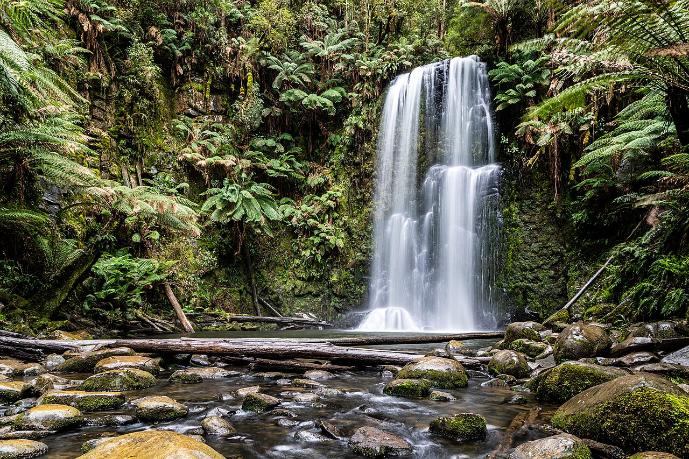

كتاب العلوم — الجزء الأول من المقرر — طبعة ١٤٤٧ / ٢٠٢٥
العلاقات في الأنظمة البيئية
الصف الخامس الابتدائي الوحدة الثانية: الأنظمة البيئية الفصل الثالث: التفاعلات في الأنظمة البيئية — الدرس الأول
إعداد: نايف المطيري
موقع الدرس
أين نحن من الكتاب؟
ص ٨٤
الوحدة الثانية
الأنظمة البيئية
الفصل الثالث
التفاعلات في الأنظمة البيئية
الدرس الأول
العلاقات في الأنظمة البيئية
السؤال الأساسي: كيف تتفاعل المخلوقات الحية والأشياء غير الحية معًا في النظام البيئي؟
أهداف التعلم
ماذا سأتعلم في هذا الدرس؟
أُعرِّف النظام البيئي والجماعة الحيوية.
أُبيِّن معنى العامل المحدِّد وأذكر أمثلة عليه.
أُوضِّح مفهوم السَّعة التحمُّلية.
أُفرِّق بين الموطن والإطار البيئي.
أَصِف كيف تتجنَّب المخلوقات الحية التنافس.
أُميِّز علاقة التكافل بأشكالها: تبادل المنفعة والتعايش.
أُعرِّف علاقة التطفُّل وأذكر أمثلتها.
أُوظِّف مهارة الاستنتاج.
تمهيد
لنبدأ بسؤال
طائران يعيشان في الشجرة نفسها ولا يتنافسان… كيف يكون ذلك؟
لأن لكلٍّ منهما دورًا خاصًّا وغذاءً مختلفًا. لنتعرَّف العلاقات في النظام البيئي.
معرفة سابقة
ما أعرفه من قبل
العوامل الحيوية
جميع المخلوقات الحية في البيئة.
العوامل اللاحيوية
الأشياء غير الحية: الماء والصخر والتربة والضوء.
التنافس
صراع بين المخلوقات على الطعام والماء.
المفردات
مفردات الدرس
ص ٨٦
النظام البيئي
يتشكَّل من المخلوقات الحية والأشياء غير الحية وتفاعلاتها معًا في بيئة معينة.
العامل المحدِّد
أيُّ عنصر يتحكَّم في معدل نموِّ الجماعات الحيوية (زيادةً أو نقصانًا).
الجماعة الحيوية
جميع أفراد النوع الواحد التي تعيش في نظام بيئي.
السَّعة التحمُّلية
أقصى عدد من أفراد الجماعة الحيوية يمكن لنظام بيئي دعمه وإعالته.
الموطن
المكان الذي يعيش فيه المخلوق الحي، ويحصل منه على الغذاء.
الإطار البيئي
الدور الخاص الذي يؤدِّيه المخلوق في موطن معين وضمن ظروف مناسبة.
علاقة التكافل
علاقة بين نوعين أو أكثر يستفيد منها أحدها على الأقلِّ دون ضرر للباقي.
تبادل المنفعة
علاقة تعاونية يستفيد فيها كلٌّ من المخلوقَين من الآخر.
التعايش
علاقة يستفيد منها أحدهما دون أن يسبِّب الأذى للآخر.
التطفُّل
علاقة مفيدة لطرف ومضرَّة بالطرف الآخر.
مهارة القراءة في هذا الدرس: الاستنتاج (ماذا أعرف؟ ← ماذا أستنتج؟).
أستكشف — نشاط استقصائي
ما الذي تحتاج إليه المخلوقات الحية لكي تعيش؟
ص ٨٥ — نشاط الكتاب
أتوقَّع: ما الذي تحتاج إليه المخلوقات الحية لكي تعيش؟ وهل تحتاج المخلوقات الحيَّة التي تعيش في بيئة مائية إلى أشياء تختلف عمَّا تحتاج إليه المخلوقات الحية في البيئة اليابسة؟
أحتاج إلى:
حصى
وعاءين مع أغطيتهما
ماء بِرْكة
نباتات مائية
حلزونات مائية
تراب
بذور أعشاب
ديدان
أختبر توقُّعي:
أعمل نموذجًا لبيئة مائية. أضع الحصى في أحد الوعاءين، ثم أملأ الوعاء بماء البِرْكة. أضيف النباتات المائية والحلزونات المائية أو أيَّ حيوانات مائية أخرى.
أعمل نموذجًا لبيئة يابسة. أضع الحصى في الوعاء الآخر، وأغطِّيه بطبقة من التُّراب. أضيف بذور الأعشاب والدِّيدان، وأغطِّيها بطبقة أخرى من التراب، ثم أسقي البذور.
أغطِّي الوعاءين، وأضعهما في مكان جيد التَّهوية بعيدًا عن ضوء الشَّمس المباشر.
ألاحظ. أتفحَّص الوعاءين لأتعرَّف التَّغيُّرات التي تحدث كل يوم مدة أسبوع. هل تفاعلت المخلوقات الحية معًا في كل بيئة؟ أسجل ملاحظاتي.
أستكشف — نشاط استقصائي
أستخلص النتائج
ص ٨٥ — أسئلة الكتاب
٥. ما العوامل الحيوية والعوامل اللاحيوية لكلٍّ من البيئة المائية والبيئة اليابسة؟
سؤال الكتاب — ص ٨٥البيئة المائية — حيوية: النباتات المائية، الحلزونات المائية، وأيُّ حيوانات مائية أخرى. لاحيوية: ماء البِرْكة، الحصى، الهواء، الضوء، الوعاء. البيئة اليابسة — حيوية: بذور الأعشاب (النباتات)، الدِّيدان. لاحيوية: التراب، الحصى، الماء الذي سُقيت به، الهواء، الضوء.
٦. أستنتج. كيف ساعدت النباتات الحيوانات على العيش في البيئة المائية، وفي بيئة اليابسة؟
سؤال الكتاب — ص ٨٥النباتات منتِجات تصنع غذاءها بنفسها، فتوفِّر الغذاء للحيوانات مباشرةً أو عبر غيرها، كما تطرح الأكسجين الذي تحتاج إليه الحيوانات في التنفُّس، وتوفِّر لها المأوى والحماية. وفي البيئة المائية تزوِّد النباتات المائية الحلزوناتِ بالغذاء والأكسجين المذاب، وفي اليابسة تزوِّد الأعشابُ الديدانَ بالمواد النباتية.
٧. ماذا يحدث لكلٍّ من البيئتين إذا أزيلت النباتات أو الحيوانات منهما؟
سؤال الكتاب — ص ٨٥إذا أزيلت النباتات: يفقد النظام مصدر الغذاء والأكسجين، فتموت الحيوانات أو ترحل. إذا أزيلت الحيوانات: يقلُّ ثاني أكسيد الكربون والفضلات التي تفيد النبات، ولا يتمُّ تحليل المواد الميتة، فيختلُّ توازن النظام البيئي. وفي الحالتين يفقد النظام البيئي توازنه؛ لأن مكوِّناته يعتمد بعضها على بعض.
لا ألمس ماء البِرْكة أو الديدان بيدي مباشرةً، وأغسل يديَّ جيدًا بعد النشاط.
الشرح والتفسير
لماذا تتنافس المخلوقات الحية؟
ص ٨٦
درستُ في الصفِّ الرابع شيئًا عن العلاقات في النِّظام البيئيِّ، وعلمتُ أن النظام البيئيَّ يتشكَّل من المخلوقات الحيَّة (العوامل الحيوية) والأشياء غير الحيَّة (العوامل اللاحيوية) وتفاعلاتها معًا في بيئة معينة.
تتنافس المخلوقات الحيَّة باستمرار على الموارد، ومنها المياه والغذاء والمأوى، ويعتمد بقاء المخلوقات الحية على توافر الموارد التي هيَّأها الله سبحانه وتعالى لهذه المخلوقات.
والعامل المحدِّد هو أيُّ عنصر يتحكَّم في معدل نموِّ الجماعات الحيويَّة (زيادةً أو نقصانًا).
الشرح والتفسير
الجماعة الحيوية والعوامل المحدِّدة
ص ٨٦
ونقصد بالجماعة الحيوية جميع أفراد النوع الواحد التي تعيش في نظام بيئيٍّ.
فمثلًا يتوافر الدِّفء في الغابة في فصل الصيف، وتهطل فيها كميات كافية من مياه الأمطار، فتصبح الغابة في الصيف نظامًا بيئيًّا أغنى للجماعات الحيوية مقارنةً بفصل الشتاء، ممَّا يجعل من مياه الأمطار ودرجات الحرارة عواملَ لاحيويَّةً محدَّدةً.
عوامل لاحيوية محدِّدة
مياه الأمطار · درجات الحرارة · نوع التربة · المأوى · ضوء الشمس.
عوامل حيوية محدِّدة
فالمناطق العشبيَّة تحتوي على أعشاب أكثر من المناطق الصحراويَّة، لذا تجد أن أعداد آكلات الأعشاب فيها أكثر ممَّا في الصحراء.
الشرح والتفسير
السَّعة التحمُّلية
ص ٨٧
تحدِّد العوامل الحيوية والعوامل اللاحيوية السَّعة التحمُّلية لكل مجموعة من الجماعات الحيويَّة. ويقصد بها أقصى عدد من أفراد الجماعة الحيوية يمكن لنظام بيئيٍّ دعمه وإعالته.
فمثلًا يمكن أن توفِّر الغابة المطرية الغذاء لعدد معيَّن من الفهود، فإذا زاد عددها أصبح من الصَّعب عليها الحصول على الغذاء، ممَّا يؤدِّي إلى موت بعضها.
حقيقة: لا تستطيع الجماعات الحيويَّة أن تستمرَّ في النموِّ دون توقُّف.
نشاط
العوامل المحدَّدة
ص ٨٧ — نشاط الكتاب
أحذر. أستخدم المقصَّ لقصِّ ٢٥ قطعة مستديرة، قطر كل منها ٢٫٥ سم، تمثِّل مساحة كل قطعة المدى الذي تمتدُّ إليه جذور النبات.
أقيس. أعدُّ بيئة لهذه النباتات بعمل صندوق مكعب أبعاده ٢٠ سم.
أرمي ٨ نباتات (٨ قطع مستديرة) في الصندوق، فإذا لم تلامس قطعة قطعةً أخرى فإن النباتات تستطيع العيش. أخرج القطع المستديرة المتلامسة؛ لأنها تمثِّل النباتات التي لا تقدر على العيش. وأسجل نتائجي في جدول بيانات.
أكرِّر الخطوة (٣) ثلاث مرات أقوم خلالها برمي ١٠ ثم ١٢ ثم ١٤ قطعة مستديرة. وأسجل نتائجي. ما عدد النباتات التي استطاعت العيش؟
عدد القطع المرميَّة
عدد النباتات التي عاشت
٨
١٠
١٢
١٤
أحذر: أستعمل المقصَّ بحذر، وأوجِّه حدَّه بعيدًا عن يدي وعن زملائي.
نشاط
إجابة سؤال النشاط
ص ٨٧ — سؤال الكتاب
٥. أستنتج. كيف يكون الاكتظاظ عاملًا محدِّدًا؟
سؤال الكتاب — ص ٨٧كلَّما زاد عدد القطع في المساحة نفسها زاد تلامسها، فقلَّ عدد النباتات التي تستطيع العيش. وكذلك في الطبيعة: عندما يزداد عدد أفراد الجماعة الحيوية في مساحة محدودة تتنافس على الماء والغذاء والمكان والضوء، فلا يجد بعضها ما يكفيه فيموت. فالاكتظاظ يتحكَّم في معدل نموِّ الجماعة الحيوية بالنقصان، وهذا هو معنى العامل المحدِّد، وهو ما يحدِّد السَّعة التحمُّلية للنظام البيئي.
أختبر نفسي
أسئلة الكتاب
ص ٨٧
أستنتج. يحتوي قاع المحيط المظلم على عدد أقلَّ من المخلوقات الحيَّة مقارنةً بالسَّطح. ما العامل المحدَّد في هذا النِّظام البيئيِّ؟
سؤال الكتاب — ص ٨٧ضوء الشمس؛ فهو عامل لاحيوي محدِّد. فغياب الضوء في القاع يمنع المنتِجات من صنع الغذاء، فيقلُّ الغذاء المتاح، وتقلُّ تبعًا لذلك أعداد المخلوقات الحية التي يستطيع النظام البيئي إعالتها.
التفكير الناقد. لماذا تعدُّ الزيادة المفاجئة في عدد الحيوانات المفترسة ظاهرة مؤقَّتة؟
سؤال الكتاب — ص ٨٧لأن زيادة المفترسات تعني استهلاكًا أكبر للفرائس، فتقلُّ أعداد الفرائس بسرعة. وعندها لا يجد المفترسون غذاءً كافيًا — فقد تجاوزت أعدادُهم السَّعة التحمُّلية للنظام البيئي — فيموت بعضها أو يرحل، ويعود العدد إلى الانخفاض. فالغذاء عامل محدِّد يعيد التوازن.
الشرح والتفسير
كيف تتجنَّب المخلوقات الحية التنافس؟
ص ٨٨
تتجنَّب المخلوقات الحيَّة التنافس عن طريق حصولها على منطقة خاصَّة بها، وتأدية دور خاصٍّ في النِّظام البيئيِّ.
الموطن: المكان الذي يعيش فيه المخلوق الحيُّ، ويحصل منه على الغذاء.
ولبعض المخلوقات الحيَّة مواطن صغيرة، ومن ذلك قمل الخشب الذي يعيش تحت جذع شجرة متعفِّن. أمَّا النحل فيشمل موطنُه بيتَ النحل الذي يعيش فيه، والمناطق التي يطير إليها للبحث عن رحيق الأزهار.
الشرح والتفسير
الإطار البيئي
ص ٨٨
ولكلِّ مخلوق حيٍّ دور خاصٌّ يؤدِّيه في موطن معين، وضمن ظروف مناسبة، يسمَّى الإطار البيئيَّ.
فمثلًا إذا كان هناك طائران يعيشان في موطن واحد، ويأكلان الغذاء نفسَه، إلَّا أن أحدَهما ينشط في النهار، والآخر ينشط في الليل، فهذا يعني أنَّ الطائرين يحتلَّان إطارين بيئيَّين مختلفين.
وبطريقة مماثلة قد يشترك طائران صغيران مختلفان في مجتمع حيويٍّ في الموطن البيئيِّ نفسه، ولكنَّهما يتجنَّبان التنافسَ؛ لأنَّهما يأكلان أنواعًا مختلفة من الغذاء.
الشرح والتفسير
طيور ومناقير
ص ٨٨ — ٨٩
الطائر
طريقة حصوله على الغذاء
طائر ذو منقار معقوف طويل
يمتصُّ الرَّحيق من أزهار طويلة أنبوبيَّة الشكل
طائر ذو منقار دقيق
يلتقط بمنقاره الحشرات من أسفل لحاء الأشجار
طائر ذو منقار قويٍّ
يجد الحشرات واليرقات على الأغصان العالية جدًّا
طائر آخر
يأكل الحشرات واليرقات التي يجدها على أوراق الأشجار وغصونها ولحائها
طائر الطنَّان
يمتصُّ الرَّحيق من أزهار قمم الأشجار في الغابة المطيرة
أقرأ الصور
سؤال الكتاب
ص ٨٩
لكلِّ طائر من الطُّيور التي في الصور منقار مميَّز مختلف عن الآخر. لماذا؟ إرشاد: أقارن أشكال المناقير، وطرق البحث عن الطعام في الموطن نفسه. كيف يساعد اختلاف أشكال مناقير الطيور على توزيع مصادر الغذاء بين الطيور التي تعيش في الموطن نفسه؟
سؤال الكتاب — ص ٨٩لأن لكلِّ طائر إطارًا بيئيًّا خاصًّا به؛ فشكل المنقار يناسب نوعًا معيَّنًا من الغذاء ومكانًا معيَّنًا للبحث عنه: منقار طويل معقوف للرحيق من الأزهار الأنبوبية، ومنقار دقيق لالتقاط الحشرات من تحت اللحاء، ومنقار قويٌّ للأغصان العالية. وبهذا تتوزَّع مصادر الغذاء بين الطيور، فتتجنَّب التنافس رغم عيشها في الموطن نفسه.
أختبر نفسي
أسئلة الكتاب
ص ٨٩
أستنتج. تتشارك جماعتان حيويتان في الغذاء والموطن. ما العامل الذي يجعلهما تحتلَّان إطارين بيئيَّين مختلفين؟
سؤال الكتاب — ص ٨٩اختلاف وقت النشاط؛ فإذا كان أحدهما ينشط في النهار والآخر ينشط في الليل فإنهما يحتلَّان إطارين بيئيَّين مختلفين، وبذلك يتجنَّبان التنافس رغم اشتراكهما في الغذاء والموطن.
التفكير الناقد. ماذا يحدث للمخلوقات الحيَّة إذا دُمِّرت مواطنُها؟
سؤال الكتاب — ص ٨٩تفقد المكان الذي تعيش فيه وتحصل منه على الغذاء والمأوى، فتضطرُّ إلى الرحيل والبحث عن موطن جديد، وهناك تتنافس مع المخلوقات المقيمة على الموارد. ومن لا يجد موطنًا مناسبًا يقلُّ عدده وقد يموت، فتقلُّ السَّعة التحمُّلية ويختلُّ توازن النظام البيئي.
الشرح والتفسير
كيف تستفيد المخلوقات الحيَّة من التَّفاعلات بينها؟
ص ٩٠
سخَّر الله سبحانه وتعالى المخلوقات الحيَّة لكيْ يعتمد بعضها على بعض في النظام البيئيِّ؛ فالحيوانات جميعُها تعتمد على النَّباتات ومنتجات الغذاء الأخرى في الحصول على غذائها. وفي المقابل، تعتمد النَّباتات على الحيوانات في الحصول على ثاني أكسيد الكربون.
هذه العلاقات المتبادلة تساعد الحيوانات على البقاء، ومن هذه العلاقات علاقة التكافل، وهي علاقة ممتدة بين نوعين أو أكثر من المخلوقات الحيَّة، بحيث يستفيد منها أحد هذه المخلوقات على الأقلِّ دون أن يسبِّب ذلك ضررًا لباقي المخلوقات المشتركة في هذه العلاقة.
الشرح والتفسير
تبادل المنفعة
ص ٩٠
تبادل المنفعة هو أحد أشكال العلاقات التعاونية التي تنشأ بين مخلوقين حيَّين، بحيث يستفيد كلٌّ منهما من الآخَر.
الملقِّحات والزهرة
فعادةً يكون الملقِّح حشرةً أو طائرًا يحصل على الرَّحيق من الزَّهرة، وفي المقابل ينقل إليها حبوب اللقاح التي تحتاج إليها.
النمل وشجر الأكاسيا
حيث تزوِّد الشجرة النملَ بالمأوى والطَّعام، وفي المقابل يدافع النمل عن الشَّجرة ضدَّ الحشرات الضَّارة. ولولا هذا الدور للنمل لماتت الشجرة.
الأشنات
والأشنة فُطر وطُحلُب يعيشان معًا، حيث يوفِّر الفطر للطُّحلب المكان والأملاح، وفي المقابل يوفِّر الطُّحلب للفطر الغذاء والأكسجين.
الشرح والتفسير
التَّعايش
ص ٩١
علاقة التَّعايش علاقة بين مخلوقين حيَّين يستفيد منها أحدُهما دون أن يسبِّب الأذى للآخَر.
يلتصق سمك الرَّيمورا بأجسام أسماك كبيرة، منها القرش؛ ليحصل على فضلات الطعام ووسيلة النَّقل، والحماية التي توفِّرها هذه الأسماك الكبيرة، دون أن تسبِّب لها أيَّ أذًى. أمَّا الأسماك الكبيرة فلا تستفيد من ذلك شيئًا.
ومن أمثلة التعايش أيضًا نموُّ نبات الأوركيدا على بعض الأشجار العالية، حيث تلتفُّ جذور الأوركيدا على الأشجار بدلًا من التربة، دون أن تسبِّب أيَّ ضرر للأشجار.
أقرأ الصورة
سؤال الكتاب
ص ٩١
ما الفائدة التي تحصل عليها أسماك الرَّيمورا من الالتصاق بجسم سمك القرش؟ إرشاد: لا تحصل أسماك الريمورا على الغذاء من سمك القرش نفسه.
سؤال الكتاب — ص ٩١تحصل على فضلات الطعام التي يتركها القرش، ووسيلة النَّقل بالتنقُّل معه دون جهد، والحماية التي يوفِّرها لها هذا السمك الكبير. ولا تسبِّب له أيَّ أذًى، كما أنه لا يستفيد من ذلك شيئًا.
أختبر نفسي
أسئلة الكتاب
ص ٩١
أستنتج. كيف تستفيد الطَّحالب والفطريات من العيش معًا على شكل أشنات؟
سؤال الكتاب — ص ٩١علاقتهما تبادل منفعة: يوفِّر الفطر للطُّحلب المكان والأملاح، وفي المقابل يوفِّر الطُّحلب للفطر الغذاء والأكسجين. فيستفيد كلٌّ منهما من الآخر ويستطيعان العيش في أماكن لا يعيش فيها أيٌّ منهما وحده.
التفكير الناقد. هل تعدُّ علاقة الطائر الذي يلتقط الحشرات عن حيوان وحيد القرن علاقة تعايش أم تبادل منفعة؟ ولماذا؟
سؤال الكتاب — ص ٩١هي تبادل منفعة؛ لأن كلًّا منهما يستفيد: الطائر يحصل على الغذاء (الحشرات)، ووحيد القرن يتخلَّص من الحشرات التي تؤذيه. أما التعايش فيستفيد فيه أحدهما فقط دون أن يستفيد الآخر شيئًا — كما في الريمورا والقرش.
الشرح والتفسير
ما التَّطفُّل؟
ص ٩٢
بعض العلاقات بين المخلوقات الحيَّة تكون مفيدةً لطرف ومضرَّةً بالطرف الآخَر، وتسمَّى علاقة التطفُّل؛ حيث يعيش الطُّفَيْل على المخلوق الحيِّ الذي يتطفَّل عليه، ويستفيد منه، أو يعيش داخله.
ومن ذلك البَقُّ الذي يتَّخذ من أجسام الكلاب وحيوانات أخرى مكانًا يعيش فيه، ويحصل على غذائه من تلك الحيوانات.
الشرح والتفسير
أضرار الطفيليات
ص ٩٢
بعض الطُّفَيليات ضارَّة جدًّا بالمخلوقات الحيَّة التي تتطفَّل عليها. وهناك ملايين من الناس معرَّضون للإصابة بمرض الحمَّى، ومشكلات هضمية عديدة بسبب تطفُّل الدودة الشَّريطية التي تعيش داخل القناة الهضمية في أجسامهم.
الأميبا الطُّفَيْليَّة
تتطفَّل بعض الطَّلائعيات كالأميبا الطفيلية على الإنسان، وتسبِّب مرضًا يسمَّى الزُّحار الأميبيَّ. وهي تدخل إلى الجسم مع الماء والطعام الملوَّثين.
طُفَيْل مرض النوم
يتطفَّل طُفَيل آخر من الطلائعيات على الإنسان ويسبِّب له مرض النوم، حيث يُنقل للإنسان عندما تلسعه الذبابة الناقلة للطفيل.
أختبر نفسي
أسئلة الكتاب
ص ٩٢
أستنتج. لماذا تسبِّب الطُّفَيليات أضرارًا للمخلوقات الحية دون أن تقتلها؟
سؤال الكتاب — ص ٩٢لأن الطُّفَيل يعيش على المخلوق الذي يتطفَّل عليه أو داخله، ويحصل منه على غذائه ومأواه. فإذا قتله فقد مصدر غذائه ومكان عيشه ومات هو أيضًا. لذا يبقيه حيًّا ويستنزفه تدريجيًّا فيسبِّب له الضرر دون القتل.
التفكير الناقد. فيمَ تشبه علاقة التطفُّل علاقة المفترس بالفريسة؟
سؤال الكتاب — ص ٩٢تتشابهان في أن أحد الطرفين يستفيد على حساب الآخر ويتغذَّى عليه أو منه، فيتضرَّر الطرف الآخر. وتختلفان في أن المفترس يقتل فريسته ويأكلها في وقت قصير، أما الطُّفَيل فيبقى مدة طويلة على المخلوق أو داخله ويستفيد منه دون أن يقتله عادةً.
سؤال تحقُّق
أُصنِّف نوع العلاقة
ص ٩٠ — ٩٢
أقرأ المثال، ثم أختار نوع العلاقة.
——
أبدأ التصنيف.
النتيجة: ٠ / ٠
ملخص مصور
ملخص الدرس
ص ٩٣
١
يتحكَّم التنافس والعوامل المحدَّدة الأخرى في حجم الجماعات في النظام البيئيِّ.
٢
تتجنَّب المخلوقات الحية التنافس عن طريق احتلالها إطارًا بيئيًّا وموطنًا مختلفًا.
٣
تبادل المنفعة والتعايش مثالان على التكافل.
المطويات — أنظم أفكاري: أعمل مطوية ألخص فيها ما تعلمته عن العلاقات في الأنظمة البيئية: (التنافس والعوامل المحدَّدة) — (الإطار البيئي والموطن) — (علاقة التكافل) — (علاقة تبادل المنفعة) — (علاقة التعايش) — (علاقة التطفُّل).
خريطة المفاهيم
أنظم مفاهيم الدرس
العلاقات في الأنظمة البيئية
التنافس
العوامل المحدِّدةالسَّعة التحمُّلية
تجنُّب التنافس
الموطنالإطار البيئي
التكافل
تبادل المنفعةالتعايش
التطفُّل
مفيد لطرفمضرٌّ بالآخر
مراجعة الدرس
أفكر، وأتحدث، وأكتب
ص ٩٣ — أسئلة الكتاب
١. المفردات. لكلِّ مخلوق حيٍّ دور خاصٌّ به يؤدِّيه في مكان معيَّن يسمَّى …………
سؤال الكتاب — ص ٩٣الإطار البيئيَّ.
٢. أستنتج. تقلُّ فجأةً أعداد الفرائس حتى مع بقاء أعداد المفترسات كما هي. كيف تفسِّر حدوث هذا التغيُّر إذا استثنينا عامل المرض؟
سؤال الكتاب — ص ٩٣إجابة نموذجية مقترحة: يُفسَّر ذلك بتغيُّر عامل محدِّد يخصُّ الفرائس نفسها لا المفترسات؛ مثل نقص غذاء الفرائس (جفاف أو قلة الأعشاب)، أو تدمير موطنها، أو تغيُّر عامل لاحيوي كدرجة الحرارة أو الماء. فتنخفض السَّعة التحمُّلية للفرائس فيقلُّ عددها فجأةً، بينما تبقى أعداد المفترسات كما هي مؤقَّتًا قبل أن تتأثَّر هي أيضًا.
٣. التفكير الناقد. كيف تؤثِّر العوامل اللاحيوية في المواطن البيئية؟
سؤال الكتاب — ص ٩٣العوامل اللاحيوية — كمياه الأمطار ودرجات الحرارة ونوع التربة والمأوى وضوء الشمس — تتحكَّم في معدل نموِّ الجماعات الحيوية، وتحدِّد السَّعة التحمُّلية للموطن. فالغابة في الصيف بدفئها وأمطارها تصبح نظامًا أغنى للجماعات الحيوية مقارنةً بالشتاء، وقاع المحيط المظلم تقلُّ فيه المخلوقات لغياب الضوء.
مراجعة الدرس
أختار الإجابة الصحيحة · السؤال الأساسي
ص ٩٣ — أسئلة الكتاب
٤. أختار الإجابة الصحيحة. ما الذي يحدِّد السَّعة التحمُّلية للنظام البيئيِّ؟ أ. النباتات والحيوانات ب. العوامل المحدَّدة الحيوية جـ. العوامل المحدَّدة اللاحيوية د. العوامل المحدَّدة اللاحيوية والحيويَّة
سؤال الكتاب — ص ٩٣د - العوامل المحدَّدة اللاحيوية والحيويَّة؛ فالكتاب ينصُّ على أن العوامل الحيوية والعوامل اللاحيوية معًا تحدِّد السَّعة التحمُّلية لكل مجموعة من الجماعات الحيوية.
٥. السؤال الأساسي. كيف تتفاعل المخلوقات الحيَّة والأشياء غير الحيَّة معًا في النظام البيئيِّ؟
سؤال الكتاب — ص ٩٣تتنافس المخلوقات الحية باستمرار على الموارد، وتتحكَّم العوامل المحدِّدة — الحيوية واللاحيوية — في معدل نموِّ جماعاتها وتحدِّد السَّعة التحمُّلية للنظام. وتتجنَّب المخلوقات التنافس باحتلال مواطن وأطر بيئية مختلفة. كما تنشأ بينها علاقات: التكافل بشكلَيه (تبادل المنفعة والتعايش)، والتطفُّل المفيد لطرف والمضرِّ بالآخر.
مراجعة الدرس
العلوم والكتابة · العلوم والرياضيات
ص ٩٣ — أسئلة الكتاب
العلوم والكتابة — السَّرد الشخصيُّ. أكتب وصفًا للإطار البيئيِّ الذي أعيش فيه.
سؤال الكتاب — ص ٩٣إجابة نموذجية مقترحة: أعيش في حيٍّ سكنيٍّ داخل مدينة؛ فموطني هو البيت والمدرسة والحيُّ الذي أتنقَّل فيه. ودوري الخاصُّ فيه: أنا مستهلِك أحصل على غذائي من النباتات والحيوانات، وأطرح ثاني أكسيد الكربون الذي تستفيد منه النباتات. وأتفاعل مع عوامل لاحيوية كالماء والهواء وضوء الشمس ودرجة الحرارة. وأُسهم في نظامي البيئي بزراعة الأشجار وترشيد الماء وعدم رمي الفضلات.
العلوم والرياضيات — تحديد المساحة. أفترض أن موطن الذِّئب مستطيل عرضه ٤ كم، وطوله ٦ كم. فما مساحة هذا الموطن؟
سؤال الكتاب — ص ٩٣المساحة = الطول × العرض = ٦ × ٤ = ٢٤ كم٢.
تقويم ختامي
أسئلة تدريبية إضافية (من إعداد المعلم)
أيُّ عنصر يتحكَّم في معدل نموِّ الجماعات الحيوية يسمَّى:
أقصى عدد من أفراد الجماعة يمكن لنظام بيئي إعالته هو:
المكان الذي يعيش فيه المخلوق الحي ويحصل منه على الغذاء هو:
تقويم ختامي
أسئلة تدريبية إضافية (من إعداد المعلم)
علاقة النمل بشجر الأكاسيا مثال على:
علاقة سمك الريمورا بالقرش مثال على:
الدودة الشريطية التي تعيش في القناة الهضمية مثال على:
بطاقة خروج
قبل أن نُنهي الدرس
أُفرِّق بجملة واحدة بين الموطن والإطار البيئي.
أذكر مثالًا لتبادل المنفعة ومثالًا للتعايش.
لماذا لا تستطيع الجماعات الحيوية أن تستمرَّ في النموِّ دون توقُّف؟
الفكرة الرئيسة: العوامل المحدِّدة تضبط أحجام الجماعات، والمخلوقات تتجنَّب التنافس بالأطر البيئية، وتربطها علاقات تكافل وتطفُّل.
إثراء اختياري
لوحةٌ تفاعلية: شبكةٌ غذائية
إثراء اختياري
شبكةٌ غذائية: تتداخل فيها عدة سلاسل؛ لأن معظم الحيوانات تتغذَّى على أكثرَ من نوع.
المنتِجاتمستهلِكٌ أولمستهلِكٌ أولمستهلِكٌ ثانٍمستهلِكٌ ثالثمفترسٌ في القمة
اضغط على أيِّ عنصرٍ في الرسم، أو تابع الخطوات بالترتيب.
إثراء اختياري
معرضٌ مصوَّر: علاقاتٌ بين المخلوقات
إثراء اختياري
التقايُض
ينتفع الطرفان معًا كالنحل والزهرة
التطفُّل
ينتفع طرفٌ ويتضرَّر الآخر
الافتراس
مخلوقٌ يصطاد آخر ليتغذَّى عليه
التنافُس
تنافسٌ على الغذاء أو الماء أو الضوء
تتنوَّع العلاقات بين المخلوقات الحية في النظام البيئي.
إثراء اختياري
هل تعلم؟ — شراكاتٌ عجيبة
إثراء اختياري
١
تعيش بكتيريا في عُقَد جذور البقوليات فتمنح النبات نيتروجينًا، ويمنحها النبات غذاءً ومأوى — شراكةٌ رابحة للطرفين.
٢
بعض الطيور تلتقط الحشرات من ظهر الماشية؛ فالطائر يجد غذاءً والماشية تتخلَّص من الطفيليات.
٣
المخلوق الواحد قد يكون مفترسًا وفريسةً في الوقت نفسه؛ فالأفعى تأكل الفأر ويأكلها النسر.
لا يعيش مخلوقٌ في النظام البيئي وحده.
إثراء اختياري
بطاقات المفردات — اقلبها!
إثراء اختياري
النظام البيئياضغط لترى المعنى
يتشكَّل من المخلوقات الحية والأشياء غير الحية وتفاعلاتها معًا في بيئة معينة.
العامل المحدِّداضغط لترى المعنى
أيُّ عنصر يتحكَّم في معدل نموِّ الجماعات الحيوية (زيادةً أو نقصانًا).
الجماعة الحيويةاضغط لترى المعنى
جميع أفراد النوع الواحد التي تعيش في نظام بيئي.
السَّعة التحمُّليةاضغط لترى المعنى
أقصى عدد من أفراد الجماعة الحيوية يمكن لنظام بيئي دعمه وإعالته.
الموطناضغط لترى المعنى
المكان الذي يعيش فيه المخلوق الحي، ويحصل منه على الغذاء.
الإطار البيئياضغط لترى المعنى
الدور الخاص الذي يؤدِّيه المخلوق في موطن معين وضمن ظروف مناسبة.
اضغط على البطاقة لترى المعنى.
إثراء اختياري
لعبة: صواب أم خطأ
إثراء اختياري
—
النتيجة
اقرأ العبارة ثم اختر.
إثراء اختياري
العلوم في حياتي
إثراء اختياري
ارصد علاقة
راقب مكانًا قريبًا (حديقة أو شجرة) وسجِّل علاقةً واحدةً بين مخلوقين، وحدِّد نوعها.
سؤال تفكير
ماذا يحدث لأعداد الفرائس لو زادت أعداد المفترسات فجأة؟
🔎 إثراء مصوّر
عدسة العلوم
ألاحظ · أتساءل · أفسّر
كيف قد يساعد اختلاف الغذاء وأماكن التغذي حيوانات الغابة على مشاركة الموطن؟

غابة وشلال في حديقة أوتواي الكبرى بأستراليا؛ يجمع النظام البيئي مكونات حية وغير حية.
تقسيم استخدام الموارد قد يتيح التعايش؛ المثال يوضح الفكرة ولا يضمن اختفاء التنافس تمامًا.
🌾
غذاء مختلف
بذور لطائر وحشرات لآخر
🧪 مختبر الاستكشاف
الغذاء عامل محدد
أتوقّع · أجرّب · أقارن
إذا بقي الماء والمأوى مناسبين، كيف يغير الغذاء المتاح قدرة الموطن على دعم جماعة؟
توافر الغذاء
الرموز ليست تعدادًا متوقعًا للحيوانات؛ النموذج يعزل الغذاء بينما تتفاعل عوامل كثيرة في الطبيعة.
مؤشر تصوري لقدرة الموطن على دعم الجماعة
🐦🐦🐦🐦🐦🐦🐦🐦🐦🐦
دعم أقل
يظهر مؤشر منخفض لقدرة الموطن على الدعم.
الغذاء القليل يحد ما يستطيع الموطن توفيره للجماعة، مع افتراض بقاء الموارد الأخرى مناسبة.
توقّع النتيجة، ثم غيّر الحالة وشغّل المحاكاة.
🤔 ماذا تتوقع إذا زاد الغذاء كثيرًا لكن الماء أصبح نادرًا؟
انْتَهَى الدَّرْسُ
إعداد: نايف المطيري
العلوم — الصف الخامس الابتدائي — الجزء الأول من المقرر الوحدة الثانية: الأنظمة البيئية · الفصل الثالث: التفاعلات في الأنظمة البيئية · العلاقات في الأنظمة البيئية المصدر: كتاب الطالب، صفحات الكتاب: ٨٤ – ٩٣ — طبعة ١٤٤٧ / ٢٠٢٥